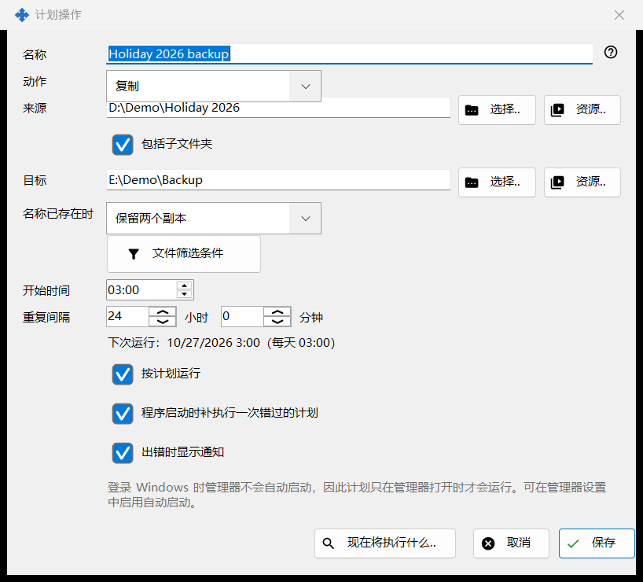
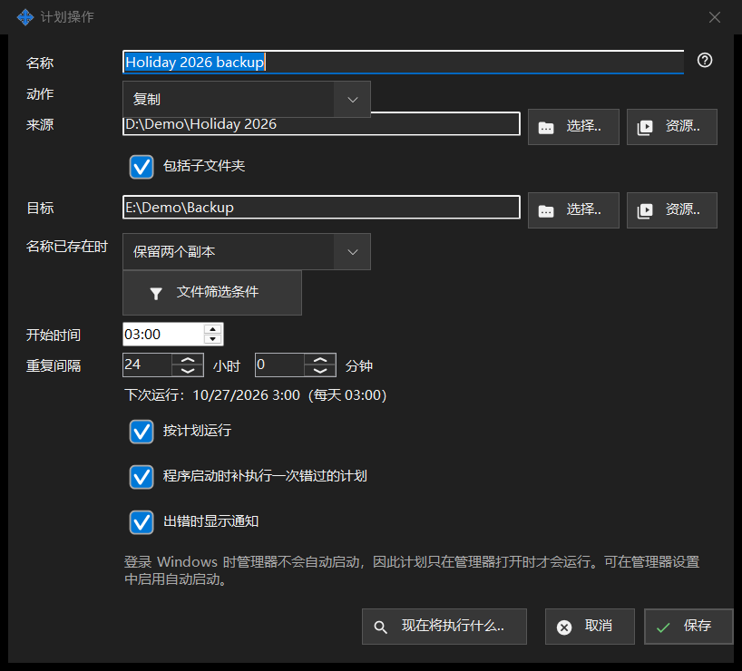

计划操作
用途说明
编辑一个计划文件操作：按重复计划将文件从来源复制、移动、删除或归档到目标。计划文件操作与 Share Manager 一同安装（同一个安装包，无需单独下载，也没有 Windows 服务），并在 Share Manager 于您已登录的会话中运行期间执行。它们不需要文件夹共享、服务器、开放端口或管理员权限。该窗口可从「计划操作」窗口和 Share Manager 设置的「计划文件操作」页面上的「新建..」或「编辑..」打开，也可从查看器文件夹菜单项「为此文件夹安排计划操作..」打开，后者会把该文件夹填为来源。


操作顺序
- 输入名称并选择动作。
- 用「选择..」、「资源..」或「通过 Google Drive」设置来源，以及用于复制、移动和归档的目标。
- 对于复制和移动，选择「名称已存在时」的处理方式。
- 打开「文件筛选条件」以缩小文件范围。
- 设置「开始时间」和「重复间隔」，并保持勾选「按计划运行」。
- 查看「现在将执行什么..」，然后点击「保存」。
界面元素
快速上手
可从 Share Manager 的托盘菜单、查看器文件夹菜单项「计划操作..」（任何文件列表都有该项），或用您在查看器的快捷键设置中分配给查看器命令「计划操作」的按键打开「计划操作」窗口；该命令默认没有按键。Share Manager 设置的「计划文件操作」页面上有同一份列表，其中的链接「在独立窗口中打开..」会把它在独立窗口中打开。一个安全的首个操作：点击「新建..」，选择复制，以含有几个测试文件的文件夹作为来源、以空文件夹作为目标，设置「重复间隔」，保持勾选「按计划运行」，查看「现在将执行什么..」（它只列出文件，不会更改任何内容），然后点击「保存」。只有在「计划操作」窗口中勾选了「在此计算机上按计划运行操作」时，操作才会运行；取消勾选会停止所有计划，而「立即运行」仍可手动使用。Share Manager 必须在运行：链接「打开自动启动设置」通向它随 Windows 登录启动的设置。电脑睡眠或 Share Manager 关闭期间不会运行任何操作；下次启动时，如果勾选了「程序启动时补执行一次错过的计划」，错过的运行会补执行一次。「历史记录..」显示每次运行。
动作和名称冲突
动作为复制、移动、删除或归档，窗口只显示该动作需要的行：删除没有目标；「名称已存在时」（跳过、覆盖、保留两个副本）只出现在复制和移动中；「归档文件校验通过后删除原文件」只出现在归档中，并且只有在归档被读回并校验后才会删除原文件。
来源和目标
输入完整路径或点击「选择..」。「资源..」从查看器的资源列表中选取 SFTP 服务器或网络文件夹，归档不提供该选项，归档只接受普通文件夹和 Google Drive。「通过 Google Drive」仅在你已登录 Google Drive，或该侧已在使用它时出现。当「包括子文件夹」关闭时，只处理来源文件夹本身的文件。「保存」会拒绝系统文件夹和程序文件夹，以及等于来源或位于来源内部的目标，并说明问题所在。
通过 Google Drive
「通过 Google Drive」打开一个小窗口，说明这一侧的含义。作为来源，它提供「其他设备发送到此电脑的内容」以及你的其他设备发布的文件夹；作为目标，它提供「我的任意设备」以及按名称列出的你的每台设备。发往目标的文件分成数据包，经由你自己的 Google Drive 传送，设备取走时到达；子文件夹不保留。来自来源的文件先到达此电脑的临时文件夹，再以基本文件名进入目标，不含子文件夹。数据包只有在其全部文件都到达目标后才离开你的 Google Drive，移动操作只有在数据包已位于你的 Google Drive 后才移除原文件。从设备的文件夹，一次运行只取上次完整运行以来发生变化的内容。只有一侧可以使用 Google Drive；来源通过 Google Drive 时，「保存」会拒绝删除和文件时间条件，「现在将执行什么..」会提示通过 Google Drive 到来的内容要到运行时才知道。如果 Google Drive 没有响应，本次运行会被跳过，下一次再试。Google Drive 空间不足、登录失效或设备拒绝都会使运行停止，历史记录会说明原因。
删除文件
当文件将被移除时（删除，或带有「归档文件校验通过后删除原文件」选项的归档），「删除：..」这一行会说明它们的去向：放入回收站，或永久删除并附带原因，例如网络磁盘或可移动磁盘没有回收站。对于这样的操作，Enter 不会保存；请有意识地点击「保存」。计划运行从不提问，并会记录已删除文件的去向。
文件筛选条件
当条件与默认值不同时，该面板会自动展开。文件类型：所有文件、图片、音频、视频、文档（「所有文件」会关闭其余四项）。修改时间：全部时间、自上次运行以来新增的、最近一小时、最近一天。「名称通配符」和「按通配符排除」可以接受多个以分号分隔的通配符，例如 *.jpg;IMG_??.png，与文件名比较。「超过」和「不足」以天和小时为单位，「大于」和「小于」以 MB 为单位。「包括隐藏文件和系统文件」默认关闭。
计划
「开始时间」设置一天中的时刻，「重复间隔」设置以小时和分钟计的间隔；整数天会在同一时刻重复。它们下方的一行显示「下次运行：时间（规则）」或「计划已关闭：该操作只能手动运行。」。「程序启动时补执行一次错过的计划」和「出错时显示通知」是各自独立的选项。另一行说明该计划仅在 Share Manager 运行时有效，以及它是否随 Windows 登录启动；此窗口中的任何内容都不会更改自动启动。
预览和保存
「现在将执行什么..」列出操作将处理的文件，且不会更改任何内容；运行并不需要它。「保存」存储该操作，或列出必须修正的内容。「取消」放弃你的编辑。